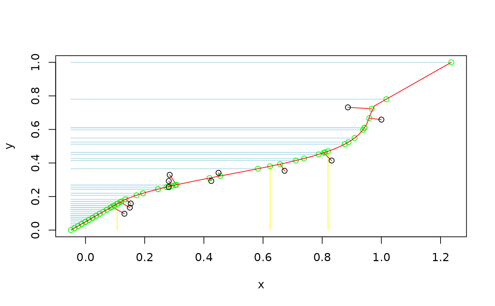

projects data points onto the curve defined by the model function
project_points(x, y, xylim, best.model, plot = door_default_values("plot"), points_cex = door_default_values("points.cex"), title = door_default_values("title"), ...)
Arguments
| x, y | numeric vectors of data values, coordinate vectors of points to
plot, the coordinates can contain |
|---|---|
| xylim | numeric vectors, x, y limits of the plot. |
| best.model | a list, containing the parameters, function, inverse function, Leibniz's notation for distance calculation and MD value. if missing, the best model will be generated automatically. |
| plot | logical, If |
| points_cex | a numerical value, giving the magnification level of symbols relative to the default size. |
| title | logical, If |
| ... | further graphical parameters |
Details
For internal use in the merging process (see also
model_response). The model function is choosen by
calculate_model. project_points then projects the
data points from the datasets to be merged onto the curve defined by the
model function. It computes the closest distance from a data point to a point
on the curve by numerical optimisation.
A list with two data frames "double.observations" and "single.observations"
is returned, which give the coordinates of double observations (defined as
(x,y)) and coordinates of single observation (defined as (x,NA) or (NA,y)).
Both data frames contain seven columns: "ID" indicating the original position
of data x and y, "x", "y" indicating the coordinate of observation, "X", "Y"
indicating the coordinate of projected point on the function, "distance"
indicating the distances between (xmin, f(xmin)) and all points on the
functional line, "NDR" indicating the normalized distances across all the
distance values.
See also
Author
Shouwen Ma <shouwen.ma@uni-konstanz.de>
Examples
# load data library(DoOR.data) data(Or23a) # normalize two example data sets x <- door_norm(Or23a[,'Hallem.2004.EN']) y <- door_norm(Or23a[,'Hallem.2006.EN']) # find the best fitting function and project the remaining points (measured # only in one of the data sets) onto the fit. project_points(x = x, y = y, plot = TRUE)
#> $double.observations #> ID x y X Y distance NDR #> 1 12 0.2813578 0.25609756 0.28016263 0.2589097 0.3494159 0.22982954 #> 2 44 0.1529174 0.15853659 0.13515401 0.1835676 0.1856692 0.12212459 #> 3 74 1.0000000 0.65853659 0.95905910 0.6670303 1.1793320 0.77570974 #> 4 75 0.2844037 0.32926829 0.30747857 0.2698300 0.3788343 0.24917955 #> 5 86 0.8318165 0.41463415 0.80484163 0.4607232 0.9122529 0.60003755 #> 6 88 0.4250826 0.29268293 0.41906223 0.3102241 0.4975126 0.32724067 #> 7 99 0.1315046 0.09756098 0.08980186 0.1392637 0.1394340 0.09171317 #> 8 137 0.8868624 0.73170732 0.96714215 0.7231841 1.2360854 0.81303949 #> 9 144 0.4495413 0.34146341 0.45586507 0.3227436 0.5363867 0.35281021 #> 10 164 0.1498532 0.13414634 0.11726885 0.1667307 0.1669345 0.10980176 #> 11 167 0.6727890 0.35365854 0.65775728 0.3931752 0.7502270 0.49346442 #> 12 173 0.2813578 0.29268293 0.29277092 0.2640223 0.3630214 0.23877859 #> #> $single.observations #> ID x y X Y distance NDR #> 13 93 0.8195780 NA 0.8195779817 0.46962011 0.92946748 0.61136047 #> 14 151 0.6238532 NA 0.6238532110 0.38051628 0.71403638 0.46965992 #> 15 221 0.0000000 NA 0.0000000000 0.04946184 0.04952231 0.03257347 #> 16 225 0.1070459 NA 0.1070458716 0.15650771 0.15669904 0.10306934 #> 17 1 NA 0.10975610 0.0602942544 0.10975610 0.10989027 0.07228071 #> 18 3 NA 0.08536585 0.0359040105 0.08536585 0.08547021 0.05621833 #> 19 4 NA 0.08536585 0.0359040105 0.08536585 0.08547021 0.05621833 #> 20 5 NA 0.02439024 -0.0250715993 0.02439024 0.02442006 0.01606238 #> 21 11 NA 0.15853659 0.1090747422 0.15853659 0.15873039 0.10440547 #> 22 13 NA 0.14634146 0.0968796202 0.14634146 0.14652036 0.09637428 #> 23 14 NA 0.07317073 0.0237088885 0.07317073 0.07326018 0.04818714 #> 24 15 NA 0.08536585 0.0359040105 0.08536585 0.08547021 0.05621833 #> 25 16 NA 0.01219512 -0.0372667212 0.01219512 0.01221003 0.00803119 #> 26 17 NA 0.09756098 0.0480991324 0.09756098 0.09768024 0.06424952 #> 27 18 NA 0.07317073 0.0237088885 0.07317073 0.07326018 0.04818714 #> 28 19 NA 0.07317073 0.0237088885 0.07317073 0.07326018 0.04818714 #> 29 20 NA 0.13414634 0.0846844983 0.13414634 0.13431033 0.08834309 #> 30 21 NA 0.14634146 0.0968796202 0.14634146 0.14652036 0.09637428 #> 31 22 NA 0.08536585 0.0359040105 0.08536585 0.08547021 0.05621833 #> 32 23 NA 0.13414634 0.0846844983 0.13414634 0.13431033 0.08834309 #> 33 24 NA 0.06097561 0.0115137666 0.06097561 0.06105015 0.04015595 #> 34 25 NA 0.17073171 0.1212698641 0.17073171 0.17094043 0.11243666 #> 35 26 NA 0.07317073 0.0237088885 0.07317073 0.07326018 0.04818714 #> 36 27 NA 0.06097561 0.0115137666 0.06097561 0.06105015 0.04015595 #> 37 28 NA 0.09756098 0.0480991324 0.09756098 0.09768024 0.06424952 #> 38 29 NA 0.08536585 0.0359040105 0.08536585 0.08547021 0.05621833 #> 39 30 NA 0.07317073 0.0237088885 0.07317073 0.07326018 0.04818714 #> 40 31 NA 0.08536585 0.0359040105 0.08536585 0.08547021 0.05621833 #> 41 32 NA 0.06097561 0.0115137666 0.06097561 0.06105015 0.04015595 #> 42 35 NA 0.07317073 0.0237088885 0.07317073 0.07326018 0.04818714 #> 43 36 NA 0.07317073 0.0237088885 0.07317073 0.07326018 0.04818714 #> 44 37 NA 0.06097561 0.0115137666 0.06097561 0.06105015 0.04015595 #> 45 38 NA 0.04878049 -0.0006813554 0.04878049 0.04884012 0.03212476 #> 46 39 NA 0.06097561 0.0115137666 0.06097561 0.06105015 0.04015595 #> 47 40 NA 0.07317073 0.0237088885 0.07317073 0.07326018 0.04818714 #> 48 41 NA 0.06097561 0.0115137666 0.06097561 0.06105015 0.04015595 #> 49 42 NA 0.04878049 -0.0006813554 0.04878049 0.04884012 0.03212476 #> 50 43 NA 0.03658537 -0.0128764773 0.03658537 0.03663009 0.02409357 #> 51 45 NA 0.06097561 0.0115137666 0.06097561 0.06105015 0.04015595 #> 52 46 NA 0.03658537 -0.0128764773 0.03658537 0.03663009 0.02409357 #> 53 47 NA 0.07317073 0.0237088885 0.07317073 0.07326018 0.04818714 #> 54 48 NA 0.14634146 0.0968796202 0.14634146 0.14652036 0.09637428 #> 55 49 NA 0.03658537 -0.0128764773 0.03658537 0.03663009 0.02409357 #> 56 50 NA 0.20731707 0.1725070152 0.20731707 0.22994795 0.15124906 #> 57 69 NA 0.24390244 0.2450945279 0.24390244 0.31127012 0.20473900 #> 58 70 NA 0.04878049 -0.0006813554 0.04878049 0.04884012 0.03212476 #> 59 71 NA 0.03658537 -0.0128764773 0.03658537 0.03663009 0.02409357 #> 60 72 NA 0.04878049 -0.0006813554 0.04878049 0.04884012 0.03212476 #> 61 73 NA 0.26829268 0.3035465531 0.26829268 0.37461239 0.24640261 #> 62 76 NA 0.03658537 -0.0128764773 0.03658537 0.03663009 0.02409357 #> 63 83 NA 0.02439024 -0.0250715993 0.02439024 0.02442006 0.01606238 #> 64 84 NA 0.14634146 0.0968796202 0.14634146 0.14652036 0.09637428 #> 65 85 NA 0.26829268 0.3035465531 0.26829268 0.37461239 0.24640261 #> 66 87 NA 0.45121951 0.7879112845 0.45121951 0.89283678 0.58726650 #> 67 97 NA 0.08536585 0.0359040105 0.08536585 0.08547021 0.05621833 #> 68 98 NA 0.04878049 -0.0006813554 0.04878049 0.04884012 0.03212476 #> 69 100 NA 0.03658537 -0.0128764773 0.03658537 0.03663009 0.02409357 #> 70 101 NA 0.03658537 -0.0128764773 0.03658537 0.03663009 0.02409357 #> 71 102 NA 0.06097561 0.0115137666 0.06097561 0.06105015 0.04015595 #> 72 103 NA 0.04878049 -0.0006813554 0.04878049 0.04884012 0.03212476 #> 73 104 NA 0.12195122 0.0724893763 0.12195122 0.12210030 0.08031190 #> 74 105 NA 0.03658537 -0.0128764773 0.03658537 0.03663009 0.02409357 #> 75 106 NA 0.09756098 0.0480991324 0.09756098 0.09768024 0.06424952 #> 76 107 NA 0.01219512 -0.0372667212 0.01219512 0.01221003 0.00803119 #> 77 108 NA 0.00000000 -0.0494618432 0.00000000 0.00000000 0.00000000 #> 78 109 NA 0.12195122 0.0724893763 0.12195122 0.12210030 0.08031190 #> 79 132 NA 0.07317073 0.0237088885 0.07317073 0.07326018 0.04818714 #> 80 133 NA 0.18292683 0.1342471993 0.18292683 0.18455888 0.12139425 #> 81 134 NA 0.17073171 0.1212698641 0.17073171 0.17094043 0.11243666 #> 82 135 NA 0.60975610 0.9429991368 0.60975610 1.11977579 0.73653642 #> 83 136 NA 1.00000000 1.2362539878 1.00000000 1.52032643 1.00000000 #> 84 138 NA 0.12195122 0.0724893763 0.12195122 0.12210030 0.08031190 #> 85 140 NA 0.60975610 0.9429991368 0.60975610 1.11977579 0.73653642 #> 86 141 NA 0.51219512 0.8762870170 0.51219512 1.00048037 0.65806944 #> 87 142 NA 0.41463415 0.7110652437 0.41463415 0.80769522 0.53126434 #> 88 143 NA 0.46341463 0.8094119203 0.46341463 0.91755686 0.60352622 #> 89 145 NA 0.60975610 0.9429991368 0.60975610 1.11977579 0.73653642 #> 90 146 NA 0.78048780 1.0167417927 0.78048780 1.29477128 0.85164031 #> 91 147 NA 0.59756098 0.9379893756 0.59756098 1.10659047 0.72786373 #> 92 148 NA 0.54878049 0.9095724346 0.54878049 1.05001155 0.69064875 #> 93 149 NA 0.02439024 -0.0250715993 0.02439024 0.02442006 0.01606238 #> 94 150 NA 0.06097561 0.0115137666 0.06097561 0.06105015 0.04015595 #> 95 163 NA 0.13414634 0.0846844983 0.13414634 0.13431033 0.08834309 #> 96 165 NA 0.25609756 0.2733675169 0.25609756 0.34206190 0.22499240 #> 97 166 NA 0.46341463 0.8094119203 0.46341463 0.91755686 0.60352622 #> 98 168 NA 0.13414634 0.0846844983 0.13414634 0.13431033 0.08834309 #> 99 169 NA 0.21951220 0.1946379424 0.21951220 0.25521810 0.16787059 #> 100 170 NA 0.36585366 0.5827436284 0.36585366 0.67038986 0.44095126 #> 101 171 NA 0.15853659 0.1090747422 0.15853659 0.15873039 0.10440547 #> 102 172 NA 0.13414634 0.0846844983 0.13414634 0.13431033 0.08834309 #> 103 174 NA 0.12195122 0.0724893763 0.12195122 0.12210030 0.08031190 #> 104 175 NA 0.52439024 0.8887738352 0.52439024 1.01793698 0.66955159 #> 105 176 NA 0.04878049 -0.0006813554 0.04878049 0.04884012 0.03212476 #> 106 177 NA 0.04878049 -0.0006813554 0.04878049 0.04884012 0.03212476 #> 107 178 NA 0.21951220 0.1946379424 0.21951220 0.25521810 0.16787059 #> 108 179 NA 0.26829268 0.3035465531 0.26829268 0.37461239 0.24640261 #> 109 180 NA 0.06097561 0.0115137666 0.06097561 0.06105015 0.04015595 #> 110 181 NA 0.07317073 0.0237088885 0.07317073 0.07326018 0.04818714 #> 111 182 NA 0.06097561 0.0115137666 0.06097561 0.06105015 0.04015595 #> 112 183 NA 0.09756098 0.0480991324 0.09756098 0.09768024 0.06424952 #> 113 184 NA 0.21951220 0.1946379424 0.21951220 0.25521810 0.16787059 #> 114 185 NA 0.24390244 0.2450945279 0.24390244 0.31127012 0.20473900 #> 115 186 NA 0.42682927 0.7387264840 0.42682927 0.83792633 0.55114896 #> #> $MD #> [1] 0.04082858 #>